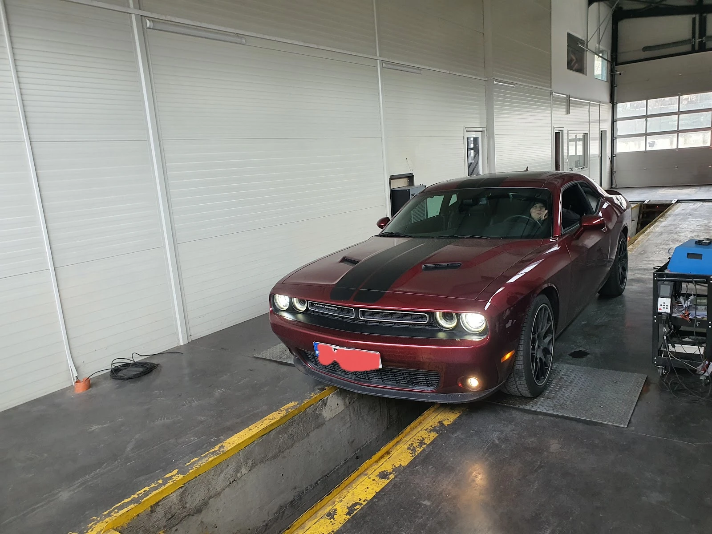

ITP
{{Inspecție tehnică periodică, autorizat RAR, pentru:|Periodic technical inspection, RAR-authorised, for:|Inspeção técnica periódica, autorizada RAR, para:}}
- {{Moto|Motorbikes|Motas}}
- {{Autoturisme|Cars|Carros}}
- {{Remorci|Trailers|Reboques}}
- {{Camioane|Trucks|Camiões}}
- {{Semiremorci|Semi-trailers|Semirreboques}}